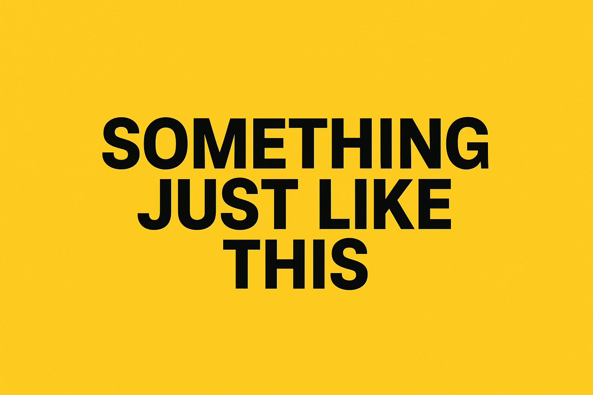

Sobre mi
Banda favorita
La música de Coldplay se caracteriza por su capacidad de unir lo melódico con lo emocional, explorando sonidos que van desde lo íntimo y minimalista hasta lo enérgico y expansivo. Sus canciones suelen construir paisajes sonoros que mezclan el pop con elementos del rock alternativo y la electrónica, generando una experiencia que conecta fácilmente con el público. A través de letras sencillas pero cargadas de sentimiento, y de un estilo que busca tanto lo personal como lo colectivo, la banda ha logrado mantener una identidad reconocible a lo largo de su trayectoria.
SU EVOLUCION
| COLDPLAY | ||||||
|---|---|---|---|---|---|---|
| 1998-2000 Primera etapa | 2000-2002 Debut “Parachutes” | 2005-2008 “X&Y” | 2008-2011 “Viva la Vida” | 2019-2021 “Everyday Life” | 2022-2025 Gira “Music of the Spheres” | |

|

|

|

|
|||
| Fundación como Pectoralz en UCL; se une Guy Berryman y luego Will Champion; cambian a Starfish y finalmente a Coldplay en 1998 | Álbum Parachutes (10/07/2000), incluye hits como “Yellow”, “Shiver”, “Trouble”, “Dont Panic”; buena acogida crítica y comercial: 17 M copias, Grammy 2002 | Tercer álbum en 2005, más experimental; éxito de ventas globales; lanzan Viva la Vida or Death and All His Friends en 2008 | Viva la Vida (2008), himno generacional, éxito masivo; Mylo Xyloto (2011), continúan con experimentación pop. | Everyday Life (2019) pausado por enfoque ecológico; Music of the Spheres (2021) inicia gira monumental. | 225 shows en 43 países; producción sostenible ; recaudación de 1.260 M $ y 11,4 M asistentes | |
| TOP 6 CANCIONES | ||||||
|  |

|

|

|

|

|
|
| INTEGRANTES | ||||||

|
Chris Martin Vocalista principal, pianista, tecladista, guitarra acústica | Jonny Buckland Guitarrista líder, teclados, coros | Guy Berryman Bajista, teclados, coros | Will Champion Baterista, percusión, teclados, coros | Phil Harvey Manager y director creativo | |